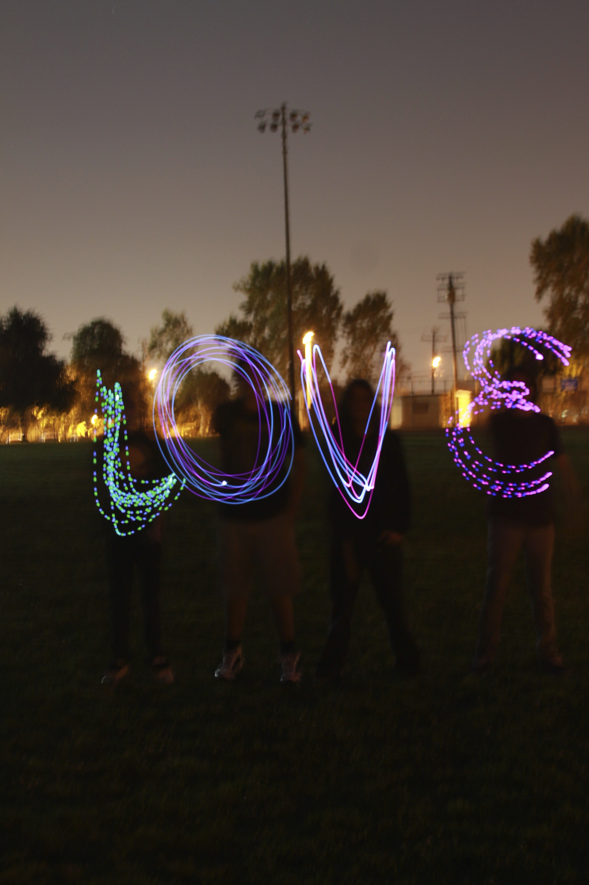
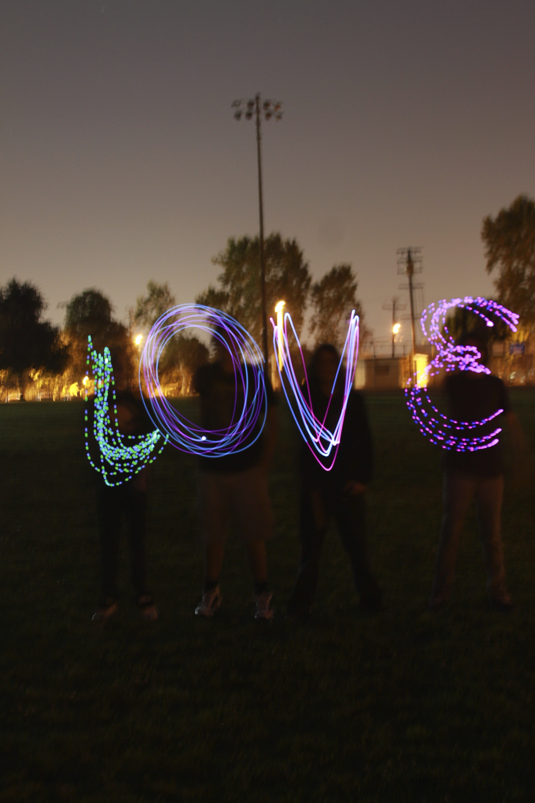
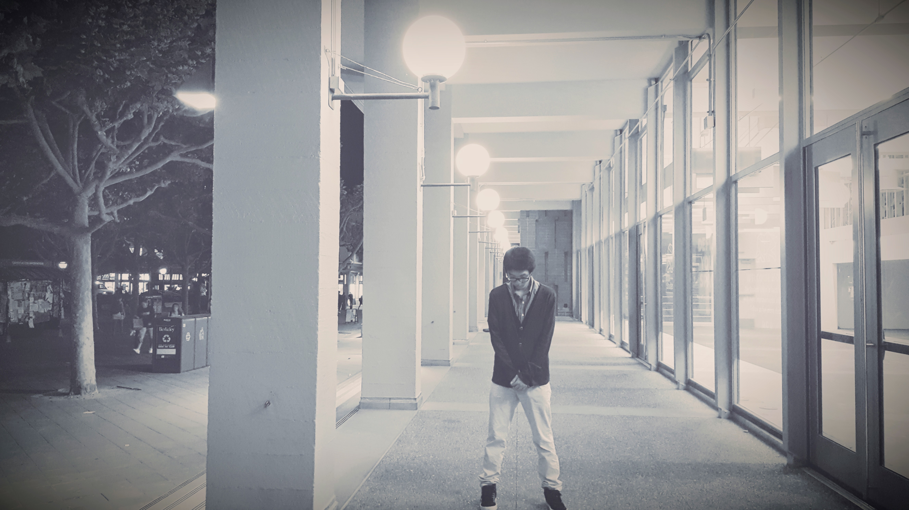
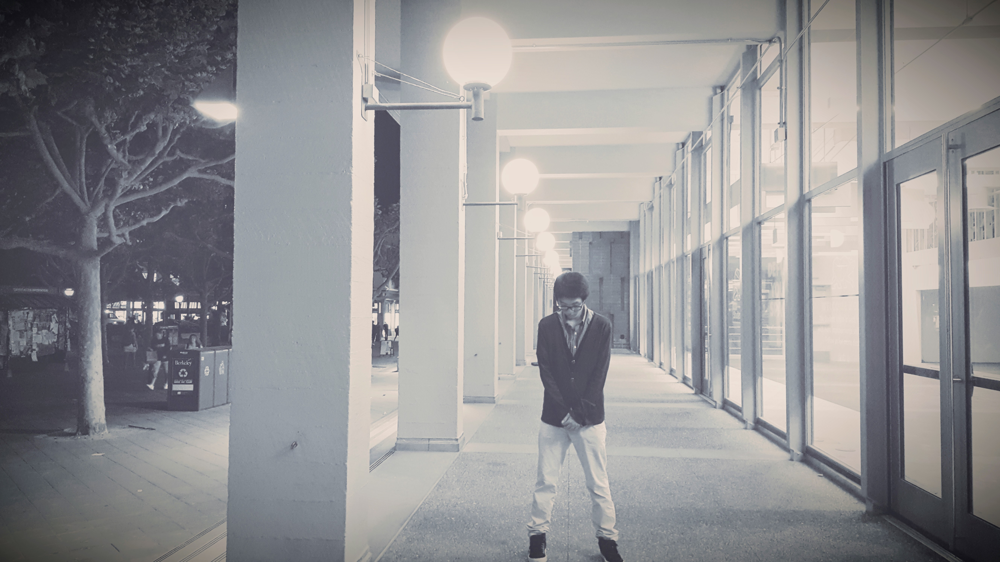
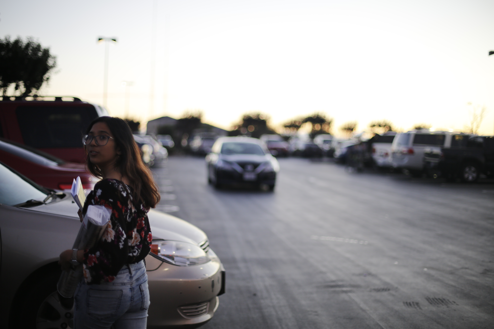
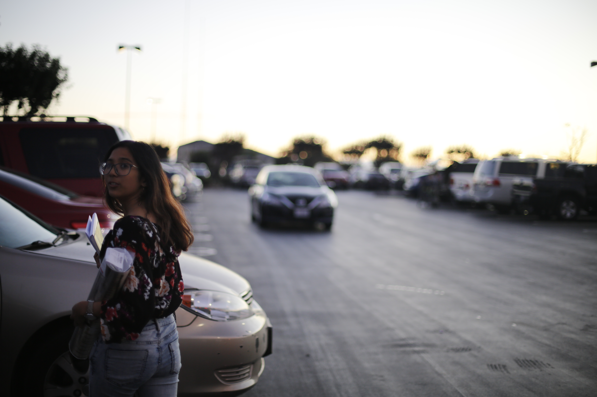
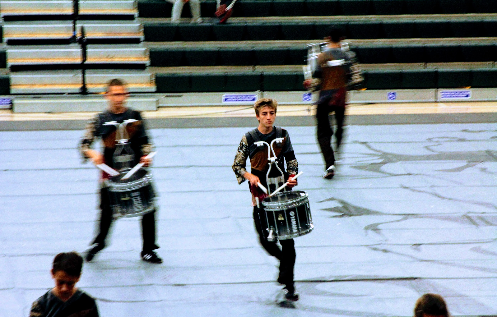
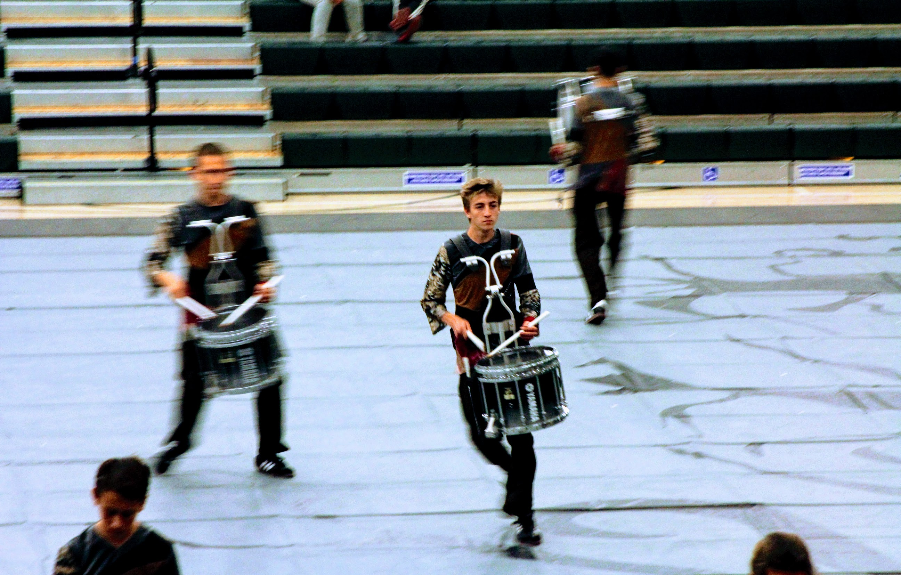
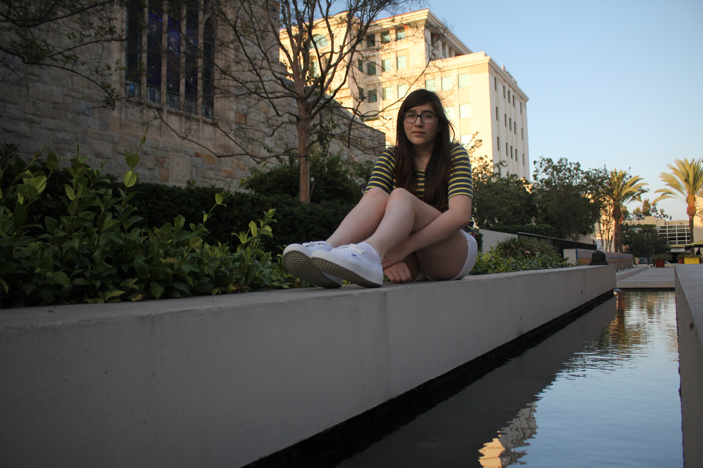
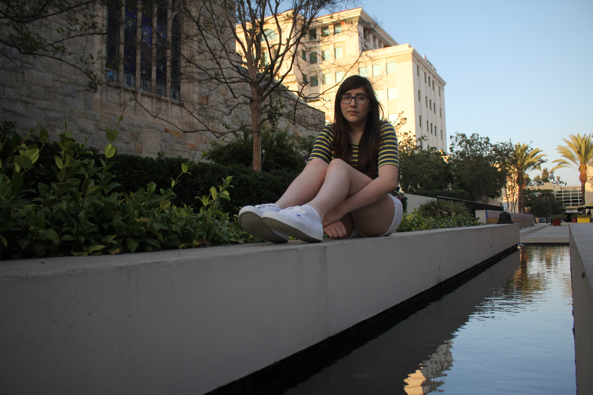

A Dog's Best Friend
It all began in ‘09 when I began living in this vast world through a series of intermittent concave and convex lenses confined by a black tube. Through my sheer curiosity and wonder, I began to explore diverse styles and angles. What drove me most was the pursuit to capture moments and stories, as information condensed and stored in a series and arrays of pixels -- that told stories and shared feelings involving and capturing the participant’s emotions and senses. One day, I want to look back at all my work with a high ratio consisting of feelings:photographs. Curious on how I see the world?
Take a gander
 

 



 



 

 
